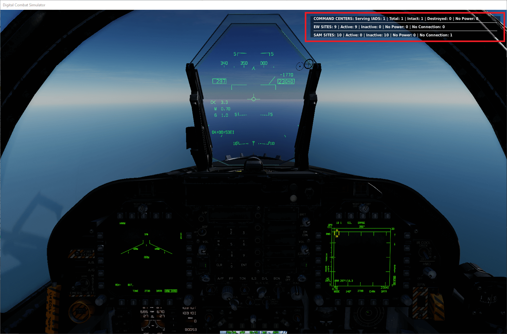

API reference¶
This is the danger zone. Call Kenny Loggins. Some experience with scripting is recommended. You can handcraft your IADS with the following functions. If you reference units that don't exist a message will be displayed when the mission loads. The following examples use static objects for command centers, connection nodes and power sources, you can also use units instead.
IADS configuration¶
Call this method to add or remove a radio menu to toggle the status output of the IADS. By default the radio menu option is not visible:
redIADS:addRadioMenu()
redIADS:removeRadioMenu()
If you dereference the IADS remember to call deactivate() otherwise background tasks of the IADS
will continue running, resulting in unexpected behaviour:
redIADS:deactivate()
Set the update interval in seconds of the IADS. This determines in what interval the IADS will turn SAM sites off or on according to targets it has detected:
redIADS:setUpdateInterval(5)
Last line of defense¶
A SAM site under network control has its radar switched off, so it is blind: the only thing that can bring it back to life is an early warning radar that covers it and is holding the target. Fly under the EW radars' horizon and no battery reacts, whatever the distance — proximity to the site is an input nowhere in the cycle, because the only sensor that could measure it is the one that was just switched off.
The last line of defense fixes that. A site held dark keeps a short virtual detection radius of its own — Skynet's, no DCS radar involved — and a hostile aircraft inside it makes the site go live with no radar contact anywhere. It is on by default.
The honest limit, which is deliberate: a short-range piece can light up for an aircraft it cannot reach, because the radius ignores the firing envelope. Requiring the kill zone would mean a Shilka, useful range about 2.5 km, never waking inside a 10–15 km radius — and short-range pieces are exactly what a last line of defense is for.
Switch it off for a mission that wants a purist IADS:
redIADS:setLastLineOfDefence(false)
Set the bounds, in metres, of the radius. Each site draws its own radius once, between these two values, and keeps it for the whole mission — so a pilot cannot learn the exact distance, and a site does not blink for an aircraft loitering near the mean. Changing the bounds makes every site draw again:
redIADS:setLastLineOfDefenceRadius(10000, 15000)
Set how long, in seconds, a site stays live after the last contact reported to it. Without this a fast pass lights the site for a single cycle and a racetrack makes it flicker:
redIADS:setLastLineOfDefencePersistence(45)
A site silenced to evade an anti-radiation missile, out of ammunition, without power or destroyed does not wake on proximity, and the site's own go live constraints are still honoured.
Reporting a contact from outside Skynet¶
reportContact is the public entry point the last line of defense itself uses. Call it to wake a
SAM site on a DCS unit, as if something had reported that aircraft to the network — a spotter, a
JTAC, any script of your own:
redIADS:reportContact(Unit.getByName('Intruder'), redIADS:getSAMSiteByGroupName('SAM-SA-6'))
Unlike the normal path it does not require the target to be inside the site's firing envelope: the site lights up because something told it the aircraft is there, not because it can hit it. Every other guard still applies, and the site is held live by the persistence above. It answers whether the site is live after the call.
Coverage refresh¶
Which battery sits under which radar is geometry, and geometry changes when something moves. Skynet re-evaluates the coverage of every element that has travelled more than 10 NM since the last sweep, by default every 10 seconds. This is what makes an AWACS in transit lose the batteries it left behind — they become autonomous, exactly as if it had been shot down — and a mobile SAM site's parents follow it as it drives.
redIADS:setCoverageRefreshInterval(10)
An interval of 0 stops the sweep. Killing an early warning radar still frees its batteries
immediately, without waiting for the next sweep.
Adding a command center¶
The command center represents the place where information is collected and analysed. If it is destroyed the IADS disintegrates.
Add a command center like this:
local commandCenter = StaticObject.getByName("Command Center")
redIADS:addCommandCenter(commandCenter)
Power sources and connection nodes¶
You can use units or static objects. Call the function multiple times to add more than one power source or connection node.
unit refers to a SAM site or EW Radar you retrieved from the IADS — see setting an
option:
local powerSource = StaticObject.getByName("EW Power Source")
unit:addPowerSource(powerSource)
local connectionNode = Unit.getByName("EW connection node")
unit:addConnectionNode(connectionNode)
For command centers use:
local commandCenter = StaticObject.getByName("Command Center2")
local comPowerSource = StaticObject.getByName("Command Center2 Power Source")
redIADS:addCommandCenter(commandCenter):addPowerSource(comPowerSource)
Warm up the SAM sites of an IADS¶
This function is deprecated and will be removed in a future release.
redIADS:setupSAMSitesAndThenActivate()
Connecting Skynet to the MOOSE AI_A2A_DISPATCHER¶
IRL an IADS would most likely not only handle SAM sites but also pass information to interceptor aircraft. You can connect Skynet with MOOSE's AI_A2A_DISPATCHER to add interceptors to the IADS. This allows the IADS not only to direct SAM sites but also to scramble fighters. Skynet will set the radars it can use on the SET_GROUP object of a dispatcher — meaning that if a radar is lost in Skynet it will no longer be available to detect and scramble interceptors. See the moose_a2a_connector demo mission.
Add the object of type SET_GROUP to the IADS like this (in this example DetectionSetGroup):
redIADS:addMooseSetGroup(DetectionSetGroup)
A full example setup of Skynet and the AI_A2A_DISPATCHER:
-- Setup Skynet IADS:
redIADS = SkynetIADS:create('Enemy IADS')
redIADS:addSAMSitesByPrefix('SAM')
redIADS:addEarlyWarningRadarsByPrefix('EW')
redIADS:activate()
-- START MOOSE CODE:
-- Define a SET_GROUP object that builds a collection of groups that define the EWR network.
DetectionSetGroup = SET_GROUP:New()
-- Setup the detection and group targets to a 30km range!
Detection = DETECTION_AREAS:New( DetectionSetGroup, 30000 )
-- Setup the A2A dispatcher, and initialize it.
A2ADispatcher = AI_A2A_DISPATCHER:New( Detection )
-- Set 100km as the radius to engage any target by airborne friendlies.
A2ADispatcher:SetEngageRadius() -- 100000 is the default value.
-- Set 200km as the radius to ground control intercept.
A2ADispatcher:SetGciRadius() -- 200000 is the default value.
CCCPBorderZone = ZONE_POLYGON:New( "RED-BORDER", GROUP:FindByName( "RED-BORDER" ) )
A2ADispatcher:SetBorderZone( CCCPBorderZone )
A2ADispatcher:SetSquadron( "Kutaisi", AIRBASE.Caucasus.Kutaisi, { "Squadron red SU-27" }, 2 )
A2ADispatcher:SetSquadronGrouping( "Kutaisi", 2 )
A2ADispatcher:SetSquadronGci( "Kutaisi", 900, 1200 )
A2ADispatcher:SetTacticalDisplay(true)
A2ADispatcher:Start()
--END MOOSE CODE
-- add the MOOSE SET_GROUP to the IADS, from now on Skynet will update active radars that the
-- MOOSE SET_GROUP can use for EW detection.
redIADS:addMooseSetGroup(DetectionSetGroup)
SAM site configuration¶
Adding SAM sites¶
Add multiple SAM sites¶
Adds SAM sites with prefix in group name to the IADS. Previously added SAM sites are cleared:
redIADS:addSAMSitesByPrefix('SAM')
Add a SAM site manually¶
You can manually add a SAM site, must be a valid group name:
redIADS:addSAMSite('SA-6 Group2')
Accessing SAM sites in the IADS¶
The following functions exist to access SAM sites added to the IADS. They all support daisy chaining options:
Returns all SAM sites with the corresponding Nato name, see skynet-iads-supported-types.lua. For all units beginning with 'SA-': don't add Nato code names (Guideline, Gainful), just write 'SA-2', 'SA-6':
redIADS:getSAMSitesByNatoName('SA-6')
Returns all SAM sites in the IADS:
redIADS:getSAMSites()
Returns a SAM site with the specified group name:
redIADS:getSAMSiteByGroupName('SAM-SA-6')
If no group carries that name, nothing is returned — the call yields no value at all, which
reads as nil when you assign it, the way every example on this page does. Chaining straight off
the call, as in redIADS:getSAMSiteByGroupName('typo'):setActAsEW(true), then fails with attempt
to index a nil value: that error almost always means a group name that does not match the mission.
getEarlyWarningRadarByUnitName behaves the same way.
Returns a SAM site with the specified group name prefix. Let's say you have a bunch of SAM sites
that all will share the same power source.
Give these sites a special prefix in the group name, e.g. SAM-SECTOR-A. Once you have added the
SAM sites you can access them via the prefix to set whatever options you want:
redIADS:getSAMSitesByPrefix('SAM-SECTOR-A')
The prefix has to start the group name: SECTOR-A matches nothing when the groups are called
SAM-SECTOR-A-.... A prefix that matches nothing, and a Nato name no site carries, both give back
an empty list rather than nothing at all, so chaining options onto them is safe — the options simply
reach no one.
Act as EW radar¶
Will set the SAM site to act as an EW radar. This will result in the SAM site always having its radar on. Contacts the SAM site sees are reported to the IADS. This option is recommended for long range systems like the S-300:
samSite:setActAsEW(true)
Engagement zone¶
Set the distance at which a SAM site will switch on its radar:
samSite:setEngagementZone(SkynetIADSAbstractRadarElement.GO_LIVE_WHEN_IN_SEARCH_RANGE)
Engagement zone options¶
SAM site will go live when target is within the red circle in the mission editor (default Skynet behaviour):
SkynetIADSAbstractRadarElement.GO_LIVE_WHEN_IN_KILL_ZONE
SAM site will go live when target is within the yellow circle in the mission editor:
SkynetIADSAbstractRadarElement.GO_LIVE_WHEN_IN_SEARCH_RANGE
This option sets the range in relation to the zone you set in setEngagementZone for a SAM site to
go live. Be careful not to set the value too low. Some SAM sites need up to 30 seconds until they
can fire.
During this time a target might have already left the engagement zone of the SAM site. This option
is intended for long range systems like the S-300. You can also set the range above 100, which will
have the effect that the SAM site goes live earlier:
samSite:setGoLiveRangeInPercent(90)
Engage air weapons¶
Will set the SAM site to engage air weapons, if it is able to do so in DCS. It is a wrapper for the ENGAGE_AIR_WEAPONS setting.
samSite:setCanEngageAirWeapons(true)
Engage HARM¶
Will set the SAM site to engage HARMs, if it is able to do so in DCS. If set to false the SAM site will shut down if a HARM that has been identified by the IADS is inbound. SAM sites that can engage HARMS are set to true by default.
samSite:setCanEngageHARM(true)
Add go live constraints¶
You can include constraints which must be satisfied for the SAM site to go live. Please note this only controls activation of the SAM site. There is currently no way to tell a SAM site to only target a certain contact via the Lua scripting engine in DCS.
The constraint must evaluate to true and the contact must be in range of the SAM site (handled by Skynet).
Use cases¶
Place a SAM site on a flight path that you suspect strike fighters will pass. Add a heading constraint to ensure that the SAM site will only go live when fighters are on their way back from the target.
Set a SAM site to only go live if aircraft are in a certain altitude band.
SAM site shall only go live once a strike package has destroyed a certain building or unit.
You do not have to use the contact provided in the function to evaluate the constraint. You can make any assertion you want.
Create a function that will evaluate if the constraint is satisfied. The function will have access to the contact the SAM site is evaluating:
--SAM site will only go live if the contact is below 1000 feet.
local function goLiveConstraint(contact)
return ( contact:getHeightInFeetMSL() < 1000 )
end
Add the function to the SAM site and give it a name. You can add as many constraints as you wish:
self.samSite:addGoLiveConstraint('ignore-low-flying-contacts', goLiveConstraint)
Remove constraint you no longer wish to use:
self.samSite:removeGoLiveConstraint('ignore-low-flying-contacts')
Get a table of all constraints:
self.samSite:getGoLiveConstraints()
Contact¶
You can use the following methods to get information about a contact.
Will return true if contact has been identified as a HARM by Skynet:
contact:isIdentifiedAsHARM()
Will return the height of a contact:
contact:getHeightInFeetMSL()
Will return the current magnetic heading of a contact. Note the heading is available only after a contact has been tracked in more than one cycle by the IADS. Until that has happened heading will be 0:
contact:getMagneticHeading()
Will return the current ground speed of a contact, in knots, rounded to decimals decimal places
(2 when the argument is omitted). Note the speed is available only after a contact has been tracked
in more than one cycle by the IADS. Until that has happened speed will be 0:
contact:getGroundSpeedInKnots(0)
Will return the time in seconds a contact has been known to the IADS:
contact:getAge()
Will return the type as an Object.Category:
contact:getTypeName()
Will return the unit name:
contact:getName()
EW radar configuration¶
Adding EW radars¶
Add multiple EW radars¶
Adds EW radars with prefix in unit name to the IADS. Previously added EW sites are cleared:
redIADS:addEarlyWarningRadarsByPrefix('EW')
Add an EW radar manually¶
You can add EW radars manually, must be a valid unit name:
redIADS:addEarlyWarningRadar('EWR West')
Accessing EW radars in the IADS¶
The following functions exist to access EW radars added to the IADS. They all support daisy chaining options.
Returns all EW radars in the IADS:
redIADS:getEarlyWarningRadars()
Returns the EW radar with the specified unit name:
redIADS:getEarlyWarningRadarByUnitName('EW-west')
Options for SAM sites and EW radars¶
Setting an option¶
In the following examples ewRadarOrSamSite refers to a single EW radar or SAM site or a table of
EW radars and SAM sites you got from the Skynet IADS, by calling one of the functions named in
accessing EW radars or accessing SAM
sites.
Daisy chaining options¶
You can daisy chain options on a single SAM site / EW Radar or a table of SAM sites / EW radars like this:
redIADS:getSAMSites():setActAsEW(true):addPowerSource(powerSource):addConnectionNode(connectionNode):setEngagementZone(SkynetIADSAbstractRadarElement.GO_LIVE_WHEN_IN_SEARCH_RANGE):setGoLiveRangeInPercent(90):setAutonomousBehaviour(SkynetIADSAbstractRadarElement.AUTONOMOUS_STATE_DARK)
HARM defence¶
You can set the reaction probability (between 0 and 100 percent). See
skynet-iads-supported-types.lua
field harm_detection_chance for default detection probabilities:
ewRadarOrSamSite:setHARMDetectionChance(50)
Point defence¶
You must use a point defence SAM that can engage HARM missiles. Can be used to protect SAM sites or EW radars. See point defence for information on what this does.
If you want the point defences to coordinate their HARM defence then you can add multiple point defence SAM sites into one group. This is the only place where you should add multiple SAM sites into one group in Skynet. Let's assume you have two SA-15 units defending a radar. If the SA-15 units are in separate groups they will both fire at the same HARM inbound. However if they are in the same group and multiple HARMs are inbound they will each pick a separate HARM to engage.
--first get the SAM site you want to use as point defence from the IADS:
local sa15 = redIADS:getSAMSiteByGroupName('SAM-SA-15')
--then add it to the SAM site it should protect:
redIADS:getSAMSiteByGroupName('SAM-SA-10'):addPointDefence(sa15)
This function is deprecated and will be removed in a future release.
ewRadarOrSamSite:setIgnoreHARMSWhilePointDefencesHaveAmmo(true)
Autonomous mode behaviour¶
Set how the SAM site or EW radar will behave if it loses connection to the IADS:
ewRadarOrSamSite:setAutonomousBehaviour(SkynetIADSAbstractRadarElement.AUTONOMOUS_STATE_DARK)
Autonomous mode options¶
SAM site or EW radar will behave with the default DCS AI. Alarm state will be red and ROE weapons free (default Skynet behaviour for SAM sites):
SkynetIADSAbstractRadarElement.AUTONOMOUS_STATE_DCS_AI
SAM Site or EW radar will go dark if it loses connection to the IADS (default behaviour for EW radars):
SkynetIADSAbstractRadarElement.AUTONOMOUS_STATE_DARK
Adding a jammer¶
The jammer is quite easy to set up. You need a unit that acts as a jammer source, preferably an aircraft in the strike package. Once the jammer detects an emitter it starts jamming the radar. Set the corresponding debug variable jammerProbability to see what the jammer is doing. Check skynet-iads-jammer.lua to see which SAM sites are supported.
Remember to set the AI aircraft acting as jammer in the mission editor to Reaction to Threat =
EVADE FIRE otherwise the AI will try and actively attack the SAM site.
This way it will stick to the preset flight plan.
Create a jammer and assign it to a unit. Also make sure you add the IADS you want the jammer to work for:
local jammerSource = Unit.getByName("F-4 AI")
jammer = SkynetIADSJammer:create(jammerSource, iads)
The jammer will start listening for emitters and if it finds one of the emitters it is able to jam it will start jamming it:
jammer:masterArmOn()
Will disable jamming for the specified SAM type, pass the Nato name:
jammer:disableFor('SA-2')
Will turn off the jammer. Make sure you call this function before you dereference a jammer in the code, otherwise a background task will keep on jamming:
jammer:masterArmSafe()
A battery stops being jammed about ten seconds after the jammer stops jamming it — whether the
emitter is shot down, switched off with masterArmSafe(), flown beyond its effective distance, or
loses line of sight to every radar of the battery. It is then handed back to whatever was directing
it. A battery that is dark at that moment is released when it next comes up.
Will add jammer on / off to the radio menu:
jammer:addRadioMenu()
Will remove jammer on / off from the radio menu:
jammer:removeRadioMenu()
Advanced functions¶
Add a second IADS the jammer should be able to jam, for example if you have two separate IADS running:
jammer:addIADS(iads2)
Add a new jammer function:
-- write a lambda function that expects one parameter:
-- given public available data on jammers their effectiveness drastically decreases the closer you get, so a non-linear function would make sense:
local function f(distanceNM)
return ( 1.4 ^ distanceNM ) + 80
end
-- add the function: specify which SAM type it should apply for:
self.jammer:addFunction('SA-10', f)
Set the maximum range the jammer will work, the default value is set to 200 nautical miles:
jammer:setMaximumEffectiveDistance(100)
Setting debug information¶
When developing a mission I suggest you add debug output to check how the IADS reacts to threats. Debug output may slow down DCS, so it's recommended to turn it off in a live environment.
Access the debug settings:
local iadsDebug = redIADS:getDebugSettings()
Output in game:
iadsDebug.IADSStatus = true
iadsDebug.contacts = true
iadsDebug.jammerProbability = true
Setup mistakes — a group or unit name that is not in the mission, an element belonging to the other
coalition, a group Skynet has no SAM data for — are shown on screen prefixed WARNING:, and are
always written to dcs.log whatever this is set to. It is on by default, so a mission that
knows about its own warnings and does not want them on players' screens turns it off:
iadsDebug.warnings = false
Output to dcs.log:
iadsDebug.addedEWRadar = true
iadsDebug.addedSAMSite = true
iadsDebug.radarWentLive = true
iadsDebug.radarWentDark = true
iadsDebug.harmDefence = true
These three options will output detailed information on every radar in the IADS to the dcs.log file. Enabling these may have an impact on performance:
iadsDebug.samSiteStatusEnvOutput = true
iadsDebug.earlyWarningRadarStatusEnvOutput = true
iadsDebug.commandCenterStatusEnvOutput = true

Example setup¶
This is an example of how you can set up your IADS, used in the demo mission:
do
--create an instance of the IADS
redIADS = SkynetIADS:create('RED IADS')
---debug settings remove from here on if you do not want any output on what the IADS is doing by default
local iadsDebug = redIADS:getDebugSettings()
iadsDebug.IADSStatus = true
iadsDebug.radarWentDark = true
iadsDebug.contacts = true
iadsDebug.radarWentLive = true
iadsDebug.noWorkingCommmandCenter = true
iadsDebug.samNoConnection = true
iadsDebug.jammerProbability = true
iadsDebug.addedEWRadar = true
iadsDebug.harmDefence = true
---end remove debug ---
--add all units with unit name beginning with 'EW' to the IADS:
redIADS:addEarlyWarningRadarsByPrefix('EW')
--add all groups beginning with group name 'SAM' to the IADS:
redIADS:addSAMSitesByPrefix('SAM')
--add a command center:
commandCenter = StaticObject.getByName('Command-Center')
redIADS:addCommandCenter(commandCenter)
---we add a K-50 AWACS, manually. This could just as well be automated by adding an 'EW' prefix to the unit name:
redIADS:addEarlyWarningRadar('AWACS-K-50')
--add a power source and a connection node for this EW radar:
local powerSource = StaticObject.getByName('Power-Source-EW-Center3')
local connectionNodeEW = StaticObject.getByName('Connection-Node-EW-Center3')
redIADS:getEarlyWarningRadarByUnitName('EW-Center3'):addPowerSource(powerSource):addConnectionNode(connectionNodeEW)
--add a connection node to this SA-2 site, and set the option for it to go dark, if it loses connection to the IADS:
local connectionNode = Unit.getByName('Mobile-Command-Post-SAM-SA-2')
redIADS:getSAMSiteByGroupName('SAM-SA-2'):addConnectionNode(connectionNode):setAutonomousBehaviour(SkynetIADSAbstractRadarElement.AUTONOMOUS_STATE_DARK)
--this SA-2 site will go live at 70% of its max search range:
redIADS:getSAMSiteByGroupName('SAM-SA-2'):setEngagementZone(SkynetIADSAbstractRadarElement.GO_LIVE_WHEN_IN_SEARCH_RANGE):setGoLiveRangeInPercent(70)
--all SA-10 sites shall act as EW sites, meaning their radars will be on all the time:
redIADS:getSAMSitesByNatoName('SA-10'):setActAsEW(true)
--set the SA-15's as point defence for the SA-10 site. We set the SA-10 to always identify HARMs so we can demonstrate the point defence mechanism in Skynet.
--the SA-10 will stay online when shot at by HARMS as long as the point defences and SAM site have ammo and the saturation point is not reached.
local sa15 = redIADS:getSAMSiteByGroupName('SAM-SA-15-point-defence-SA-10')
redIADS:getSAMSiteByGroupName('SAM-SA-10'):addPointDefence(sa15):setHARMDetectionChance(100)
--set this SA-11 site to go live 70% of max range of its missiles (default value: 100%), its HARM detection probability is set to 50% (default value: 70%)
redIADS:getSAMSiteByGroupName('SAM-SA-11'):setGoLiveRangeInPercent(70):setHARMDetectionChance(50)
--this SA-6 site will always react to a HARM being fired at it:
redIADS:getSAMSiteByGroupName('SAM-SA-6'):setHARMDetectionChance(100)
--set this SA-11 site to go live at maximum search range (default is at maximum firing range):
redIADS:getSAMSiteByGroupName('SAM-SA-11-2'):setEngagementZone(SkynetIADSAbstractRadarElement.GO_LIVE_WHEN_IN_SEARCH_RANGE)
--activate the radio menu to toggle IADS Status output
redIADS:addRadioMenu()
--activate the IADS
redIADS:activate()
--add the jammer
local jammer = SkynetIADSJammer:create(Unit.getByName('jammer-emitter'), redIADS)
jammer:masterArmOn()
--setup blue IADS:
blueIADS = SkynetIADS:create('BLUE IADS')
blueIADS:addSAMSitesByPrefix('BLUE-SAM')
blueIADS:addEarlyWarningRadarsByPrefix('BLUE-EW')
blueIADS:activate()
blueIADS:addRadioMenu()
local iadsDebug = blueIADS:getDebugSettings()
iadsDebug.IADSStatus = true
iadsDebug.contacts = true
end